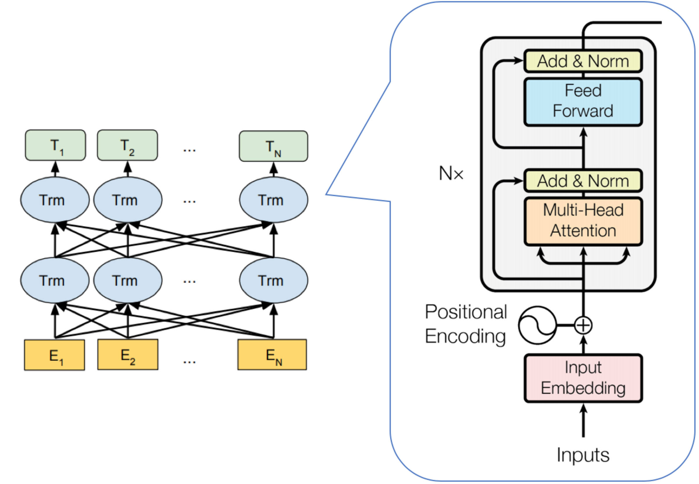

好, 今天来说说大名鼎鼎的BERT(Bidirectional Encoder Representations from Transformers), BERT是NLP领域的龙骨级模型, 它的重要意义不止其在各项任务上效果特别好, 下面就来进行介绍.
BERT之前的一些模型
在说BERT之前, 先稍微回顾一下早期的一些模型.
首先是word2vec, 在2013年有了word2vec算法以后, 在NLP领域可谓遍地开花, 用word2vec的预训练向量来代替随机初始化的词向量, 可以加快模型收敛, 并且获得更好的表现.
同时在这里还值得一提的是word2vec中, 使用了负采样的方法, 来代替原本的层次softmax. 在word2vec中, 负采样是指词级别的采样, 两个词是否相关, 相关作为正样本, 不相关则作为负样本. 在BERT中也有使用负采样, 只不过从词级别变成了句级别.
然鹅, word2vec的一个明显问题是, 其向量是固定的, 是上下文无关的. 在一些任务中, 需要消歧, 一般可以用RNN类模型来做.
那么后来就想, 既然需要上下文相关, 为什么不直接就在预训练模型中达成这一点呢? 于是乎ELMo出现了. 利用两层双向LSTM, 可以实现动态的, 上下文相关的词向量.
但是ELMo也是有问题的, 总感觉它并不是”完全”的上下文相关. ELMo基于双向LSTM, 将其结果进行拼接, 但是每个单向的LSTM只看到了一侧的信息, 并不是真正意义上的全局上下文相关.
所以到后面, 也就出现了BERT(Bidirectional Encoder Representations from Transformers), 首先, 如果是了解Transformer的同学, 应该看到这个名称, 就大概知道了BERT的模型结构; 然后, BERT也是芝麻街的一个角色, 作者挺能整活的:
BERT的重要意义, 不在于用了什么模型, 怎样训练的, 而是展现了一种新的范式. 在之前, 为每个NLP任务, 去深度定制泛化能力极差的复杂模型, 感觉是不优雅的, 走偏了方向. 想想我们人类的语言能力, 需要针对各种具体的场景进行独立地艰难地训练吗, 一般不需要, 在熟练掌握一门语言后, 可以稍加学习适应各种相关任务. 所以, 在NLP中是否也可以有这样的模式呢? BERT做到了, 作为一个泛化能力极强的龙骨级模型, 可以描述字符级, 词级, 句级的关系特征, 对于不同的NLP任务, 只需要加一个轻量级的输出层, 在少量的数据上训练即可.
BERT的原理
整体结构

如图, BERT的模型结构, 就是Transformer的Encoder部分.
其结构核心, 就是Self-Attention, 相比RNN的单向结构, 和CNN的局部结构, Self-Attention真正做到了全局的Embedding.
在谷歌的
| 模型 | Layers | Hidden Size | Attention Head | 参数总量 |
|---|---|---|---|---|
| Base | 12 | 768 | 12 | 110M |
| Large | 24 | 1024 | 16 | 340M |
其中的Layers表示的是Encoder的层数, Hidden Size表示向量维度, Attention Head表示Multi-head的数量. 可以看到, 模型参数是非常大的, Large的参数量接近是Base的三倍, 性能上也确实有提升.
可以说, 如果明白了Attention, Transformer, 那么BERT的结构就是这些东西, 没有太多新的东西. 不过BERT的训练方式是有独到之处的, 下面进行讲解.
输入
上图是BERT的输入, 咋一看, 怎么一个输入都这么复杂, 其实都挺好理解的, 下面一一进行说明.
Token Embedding:
就是单词, 或者字符对应的向量, 由训练获得.
Position Embedding:
也很好理解, 因为Self-Attention本身并不支持序列位置信息的表示, 所以在输入的时候需要额外地添加位置信息.
不过这里并没有像Transformer那样, 使用数学公式(三角函数)来直接进行表示, 而是通过学习来确定.
Segment Embedding:
由于训练任务(下文说明), 需要区分两个句子, 除了在Token那里使用[SEP]进行分割, 还额外增加了Segment Embedding. 在同一句子中, Segment Embedding是一致的.
将上面三种向量相加后, 就得到了BERT的输入, 就可以根据Self-Attention的算法进行运算了.
训练
现在的核心问题是, 如何定义学习任务, 让模型通过这个任务来调整内部的参数.
Masked LM
首先这个任务肯定不能是有监督(带标签)任务, 因为这么大的模型, 需要海量的数据进行训练, 这样的带标注的数据一般是不存在的. 而在无监督的学习任务里面, 在NLP中一般会想到语言模型, 但是BERT就是要的全局Embedding, 语言模型也不合适. 想我们以前的英语作业, 除了做阅读, 写作文以外, 还有啥, 完形填空!
没错, BERT正是用到完形填空这个学习任务来进行训练, 用论文中专业的名称叫做Masked LM(Masked Language Model). 所谓Masked Language Model, 就是说不像传统语言模型那样, 给定已经出现的词, 去预测下一个词, 而是直接把一整句话的一部分(随机选择)盖住(标记为[MASK]), 让模型去进行预测.
不过这时候出现了一个小问题, 即训练过程和推断过程不一致, 因为在训练结束后使用模型时, 是没有[MASK]标记的. 在训练的过程中, 模型可能学着学着, 会从[MASK]这个标记本身中学出一些模式, 而我们的本意, 是让模型忽略这个[MASK], 从其它的Token上获取信息去进行预测.
如何让模型尽可能地忽略[MASK]标记呢, 其实就要让它本身变得”没有规律”. 对于要进行预测的Token, 如果在输入端, 有时候出现[MASK]标记, 有时候出现某个意义不明的其它Token, 有时候就是要预测的Token本身, 没有固定的模式, 模型可能就会把这个[MASK]当成噪音对待.
具体的做法, 就是首先对一个句子中, 将其随机选取的15%的Token, 作为要预测的, 然后对于对应位置的输入, 进行如下设置:
- 80%概率, 使用[MASK]标记.
- 10%概率, 随机替换为某个Token.
- 10%概率, 直接告诉答案, 即用原Token.
这样做了以后, 既可以尽可能让模型忽略[MASK]标记, 又避免了大量地让其它的Token来客串, 导致其它Token学偏了. 至于这个具体比例为什么是这样的, 我猜测应该是拍脑袋吧哈哈.
通过Masked LM, BERT可以学习到字符级, 或者词级的模式, 而谷歌更进一步, 还想要学习句级的模式.
Next Sentence Prediction
还记得一开始回顾word2vec时提到的负采样吗, BERT在这里就用到了, 不过这次不是采样词, 而是采样句子. 具体的学习任务, 是给定一个句子对(两个句子), 判断两个句子是否相关, 或者说给定一个句子, 判断另一个句子是否是它的下一句.
再联系到上面讲解BERT的输入, 其中的Segment Embedding用以区分两个句子. 此外还有两个特殊的Token, 一个是[SEP], 用以表示句子的分割; 还有一个是[CLS], 在对应的输出位置上添加一个分类器(二分类), 通过Next Sentence Prediction的学习任务, 其对应的向量可以用于表示句子, 即获得了句子级的表示.
谷歌使用了BooksCorpus(800M词汇量)和英文Wikipedia(2500M词汇量)进行预训练. Base和Large模型分别使用4台Cloud TPU(16张TPU)和16台Cloud TPU(64张TPU)训练了4天. 啊这…有钱就是可以为所欲为.jpg
在训练好了BERT以后, 下游任务大都变得非常简单:
句子对的分类任务, 单句的分类任务, 问答系统, 序列标注等, 很多时候只需要添加简单的输出层, 使用不大的特定任务的样本进行训练, 即可得到很好的效果.
小结
其实可以发现, BERT中的很多东西都是已有的, Self-Attention, Transformer-Encoder, 负采样, 但是BERT能够获得这样优越的效果, 说明建模的出发点(构建一个龙骨级模型), 数据量, 算力, 模型结构, 都是不可或缺的东西.
BERT的优点自不必说, 谁用谁知道, 能够做到全局的上下文表示, 词级, 句级均可. 至于缺点, 比如…嗯…对了, 跑起来太费资源了[狗头].